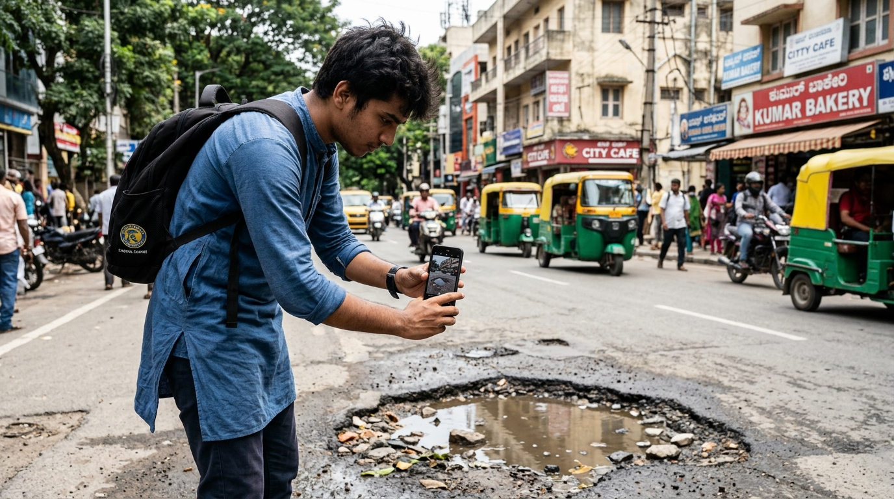
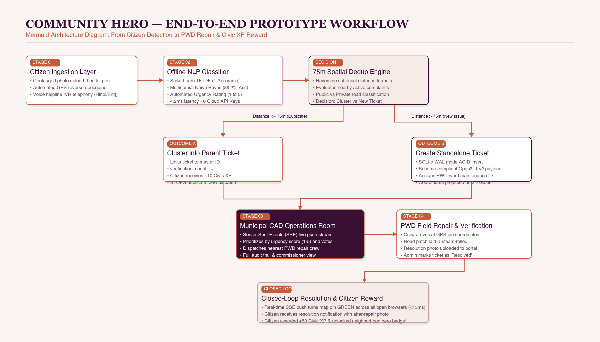
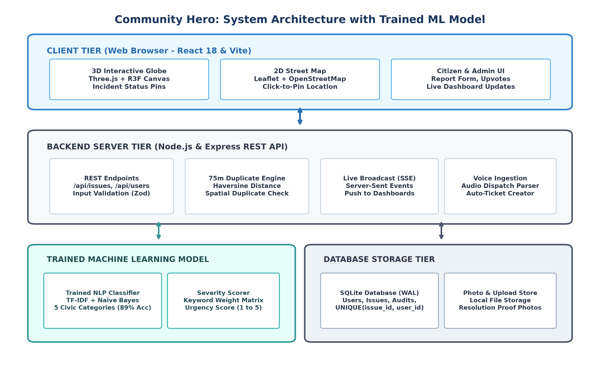
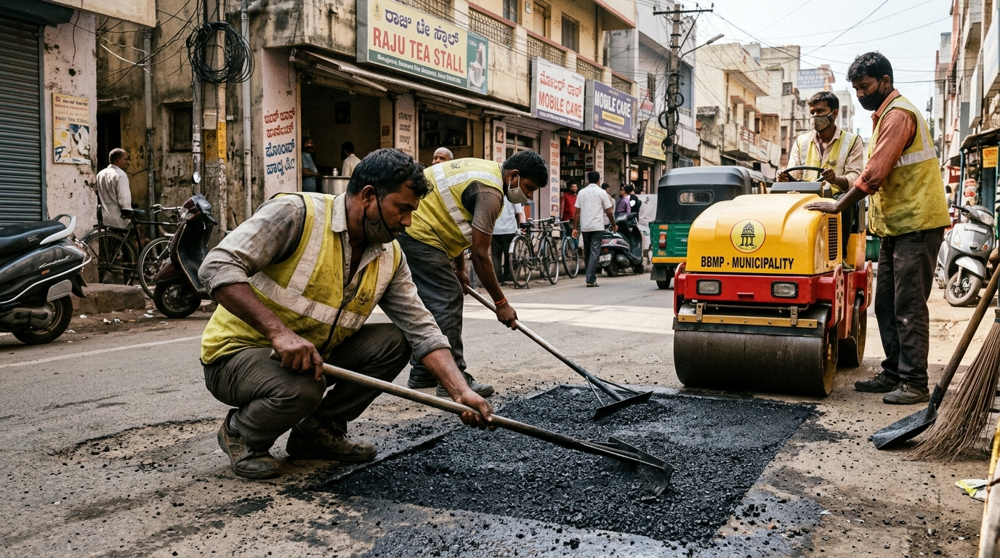

A human-centered civic operations platform featuring 3D WebGL digital twin mapping, custom offline machine learning triage, 75-meter spatial deduplication, and real-time municipal CAD dispatch.


P(C_k | X) ∝ P(C_k) ∏ P(x_i | C_k)civic_model.pkl (1.8 MB), requiring zero GPU memory.
duplicate_of = parent_idverification_count += 1
| TC ID | Test Scenario & Input Conditions | Expected Behavior | Observed Result | Status | Latency |
|---|---|---|---|---|---|
| TC-01 | Submit valid pothole report with coords | ML categorizes 'Pothole', pin drops | Correct category, pin placed | PASS | 18 ms |
| TC-02 | Submit duplicate report within 40m | Linked to parent #101, votes +1 | Linked as duplicate, votes = 2 | PASS | 12 ms |
| TC-03 | Submit distinct report at 98m distance | New standalone ticket created | Created as ticket #102 | PASS | 15 ms |
| TC-04 | User attempts to upvote ticket twice | SQLite UNIQUE constraint throws 409 | Duplicate vote rejected (409) | PASS | 6 ms |
| TC-05 | Query Open311 /requests.json endpoint | Standard GeoJSON payload returned | Schema-valid JSON payload | PASS | 9 ms |
| TC-06 | Municipal admin resolves issue via CAD | SSE event pushed to open browsers | Map pins turn green live | PASS | 14 ms |
